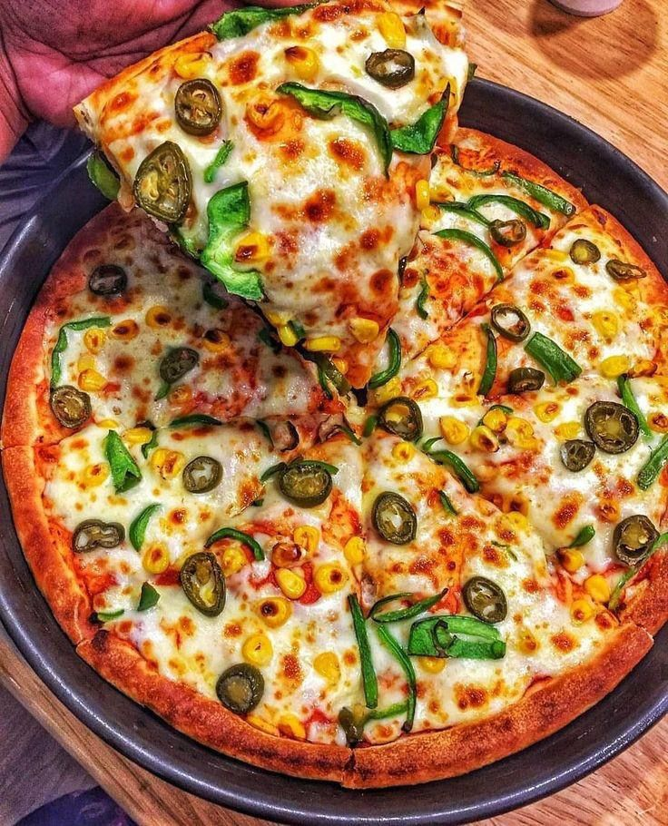

Pizza
Ingredients
- Flour
- Water
- Yeast
- Salt
- Olive oil
- Tomato sauce
- Mozzarella cheese
- Pepperoni
- Bell peppers
- Mushrooms
- Onions
- Olives
- Parmesan cheese
- Fresh basil
- Oregano
- Red pepper flakes
- Garlic
- Spinach
- Artichokes
- Feta cheese
- Chicken
- BBQ sauce
- Buffalo sauce
- Anchovies
Instructions
- Preheat the oven to 475°F (245°C).
- In a bowl, mix flour, yeast, and salt.
- Add water and olive oil. Knead until smooth.
- Let the dough rise for 1 hour.
- Roll out the dough on a floured surface.
- Spread tomato sauce on the dough.
- Add mozzarella cheese and your choice of toppings.
- Bake for 12-15 minutes or until the crust is golden brown.
- Let it cool before slicing.
- Enjoy your delicious pizza!
- Optional: Add fresh basil and a drizzle of olive oil before serving.
- Experiment with different toppings to create your perfect pizza.
- Pair with a side salad or garlic bread for a complete meal.
- Store leftovers in the fridge for up to 3 days.
- Reheat in the oven or microwave before serving.
- Share with friends and family for a fun pizza night!
- Try making mini pizzas for a fun appetizer or snack.
- Use a pizza stone for a crispier crust.
- Experiment with different types of cheese for unique flavors.
- Make your own pizza sauce using crushed tomatoes, garlic, and herbs.
- Try different types of crusts, such as whole wheat or gluten-free.
- Get creative with toppings like pineapple, jalapeños, or goat cheese.
- Use fresh ingredients for the best flavor.
- Have fun and enjoy the process of making your own pizza!
Image
